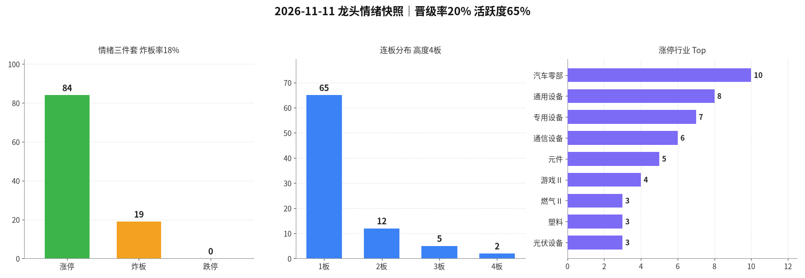

交易日 2026-11-11（周三） · 目标交易日 2026-11-12（周四） · 启动分歧·算力硬件切换
情绪：启动分歧 涨停 84 · 跌停 0 炸板率 18.4% · 晋级率 20.4% · 高度 4板| 票 | 昨动作 | 今收盘涨跌幅 | 判定 |
|---|---|---|---|
| 603121 华培动力 | 开多条件（首选） | +0.30%（竞价−0.99%符合，未晋级） | 错 |
| 002347 泰尔股份 | 开多条件（备选） | −4.42%（竞价+7.01%，不追） | 对（纪律） |
| 600609 金杯汽车 | 开多条件（备选） | +4.18%（竞价+3.66%超阈值不加） | 对（纪律） |
| 襄阳 / 豪能 / 香山 | 只观察（可升级） | 襄阳+10.02%（竞价+7.84%且炸6，不升级）；豪能−1.57%；香山+4.04% | 对（纪律） |
| 002708 光洋股份 | 观察不升级 | +10.01%（3板；竞价+7.57%不追，炸2） | 对（纪律） |
| 002578 闽发铝业 | 不加（7板） | +0.33%（断板） | 对 |
| 非主线3板 / 旧主线 / 脏板 | 不加 | 东方新能+4.98%断、龙江−6.94%断；日出/大东方近一字4板不追；先导基电+7.32%未板 | 对 |
一句话：首选华培竞价符合却未晋级、近乎平收，开多指令错；备选与观察因高开未追、闽发断板不加，纪律都对。汽车零部干净2板接力失败。改进（未回测）：启动次日若首选2板竞价偏弱，降为观察或极轻；主线看晋级质量不看家数，干净2板断、晋级靠脏板时当日降级。
涨停 84（周二93↓略降）、跌停东财池 0（乐咕真实跌停2，未扩散）、晋级率 20.4%（周二36.4%↓腰斩）、炸板率 18.4%（周二17.0%仅略升）、乐咕活跃度 64.7%（周二76.6%↓），红盘约 64.8%；连板高度从7板回落到 4板（闽发断板），4板仅日出东方、大东方两只非主线杂毛。指数并不弱（创业板 +3.11%、两市放量约1715亿），但赚钱效应从「汽车零部干净2板」切到午后放量的算力硬件（CPO/PCB/光模块）大额首板——定性 启动分歧 / 主线切换。尚未到主升：新方向还没有干净3板中军；也不是退潮（跌停未扩散、炸板率仍低）。默认降仓观察，禁追一字高位与脏板。
今日非高潮/退潮，不触发情绪→路线2风险过滤。
| 指标 | 数值 | 备注 |
|---|---|---|
| 涨停家数 | 84 | 已剔 ST / 北交所；东财 raw85→clean84（剔北交所宇特光电）；乐咕涨停=84、真实涨停=75 |
| 跌停家数 | 0 | 东财跌停池空；乐咕跌停=3、真实跌停=2（含 ST 跌停2），以东财池为主 |
| 炸板家数 | 19 | 炸板池 clean19 |
| 炸板率 | 18.4% | 炸板/(涨停+炸板)=19/103；较周二17.0%仅略升 |
| 连板高度 | 4板 | 日出东方（一字）、大东方（炸2）；高度从7板回落 |
| 连板结构 | 4板 2 / 3板 5 / 2板 12 / 1板 65 | 3板5家质量差（一字或多次炸板） |
| 昨日涨停数 | 93 | previous 池 clean，与周二涨停池一致 |
| 晋级数 / 晋级率 | 19 / 20.4% | 口径同前：previous∩今日涨停池 |
| 高度/主线样本 | 华培/泰尔/金杯均未晋级；光洋脏3板、襄阳脏2板（炸6）；算力多为午后大额首板，仅智微智能2板（午后回封） | |
| 两市成交额 | 约 16763亿（新浪：上证≈7361.6 + 深成≈9401.2；周二约15048↑，放量约1715） | |
| 涨停池成交额 | 约 928亿（仅涨停标的，周二约564↑；增量集中在东山/沪电/源杰/光迅等） | |
| 红盘占比 | 约 64.8%（乐咕上涨3381 / 下跌1647 / 平盘191；活跃度64.71%） | |
读表一句话：跌停仍近零、炸板率没恶化，所以不是退潮；但晋级率腰斩、高度回落、原主线干净2板全灭 = 启动后的分歧。量能给了新方向（算力硬件大额首板），明日只观察这些中军的竞价。

附图：涨停 / 炸板 / 跌停柱状 + 连板分布 + 行业集中（emotion_20261111.png）
通用设备8家，唯一3板锋龙竞价近一字（+9.39%），不追。游戏文投3板炸9、凯撒2板炸2，不当主仓。
4板：日出东方（一字）、大东方（炸2），非同题材，不加。
3板脏/一字：文投炸9、东方环宇炸10、光洋炸2、锋龙近一字、亚玛顿一字——不接力当主仓。
通富+3.15%、北方华创+1.71%、先导基电+7.32%（未板）、贝特利−5.79%，设备/光伏残留不升格。
主线判断依据 = 涨停池成交额集中度 + 封板时间/是否回封 + 晋级质量；不以汽车零部家数第一为继续进攻的理由。
情绪 = 启动分歧 → 专项总仓建议 ≤8%（较昨日12%下调，未回测）；同时持仓建议 0～1 只；默认先观察，不追一字高位、不接力脏3/4板、不回流已失败的汽车零部2板。
| 标的 | 603083 剑桥科技（早盘辨识优先）/ 002384 东山精密（量能优先）/ 002281 光迅科技 / 002916 深南电路 / 603228 景旺电子 / 601869 长飞光纤 / 002837 英维克；沪电、源杰只旁观、默认不升级 |
|---|---|
| 动作 | 只观察；竞价平稳（平开～高开≤3%）且同向跟风未炸扩散，才允许最强1只升为极轻开多（≤5%） |
| 进场 | 竞价平开～高开≤3%且有买盘；低开＞2%或砸盘 → 不加。不追高开＞5% 或一字。 |
| 止损 | 跌破当日分时低点或开板后30分钟无法回封 → 走 |
| 目标 | 看能否晋级2板 / 板块是否继续给额 |
| 仓位 | 默认 0%；升级后单票 ≤5%，专项合计仍 ≤8% |
| 原因 | 新主线仍是首板，尚未被连板确认；先看竞价承接。剑桥早封、东山量能是相对更好的样本 |
| 作废 | 竞价同板块多数低开＞3%；开盘后 PCB/光模块大面积炸板；跌停扩散≥5家 |
| 动作 | 只观察，默认不升级 |
|---|---|
| 仓位 | 默认 0% |
| 原因 | 虽是2板，但今日10:34起封、14:53才最后封、炸1，质量一般，不当中军首选 |
| 标的 | 华培动力 / 泰尔股份 / 金杯汽车 / 襄阳轴承 / 光洋股份 / 天普股份，以及该板块其他2板/首板 |
|---|---|
| 动作 | 不加（若仍持昨日子弹 → 反抽减/清，不补） |
| 仓位 | 0% |
| 原因 | 干净2板接力已失败；今日晋级的是大高开脏板。家数还在，主线地位已让给算力 |
| 标的 | 日出东方 / 大东方 / 文投控股 / 东方环宇 / 锋龙股份 / 亚玛顿 |
|---|---|
| 动作 | 不加 |
| 仓位 | 0% |
| 原因 | 4板/3板都不在新主线，且多数一字或多次炸板；不把非主线高度当空间龙 |
| 标的 | 永臻 / 协鑫 / 通富 / 北方华创 / 先导基电 / 贝特利 |
|---|---|
| 动作 | 不加（若仍持残留短线仓 → 反抽减/清） |
| 仓位 | 0% |
| 原因 | 残留未形成连板主线；先导基电今日+7.32%未板，只是跟风，不升格 |
| 标的 | 沪电若竞价不稳、襄阳轴承、光洋股份、文投、东方环宇，以及任何炸板≥4次回封票 |
|---|---|
| 动作 | 不加 |
| 仓位 | 0% |
| 原因 | 分歧日更要挑干净板，脏板回封胜率更差 |
20261111；乐咕活跃度交叉；个股与两市成交额来自新浪。晋级口径与此前一致（previous∩当日涨停池，19/93）。东财跌停池为空记0，乐咕显示真实跌停2，已注明。数字见 data/*_20261111* / metrics_20261111.json。未编造。